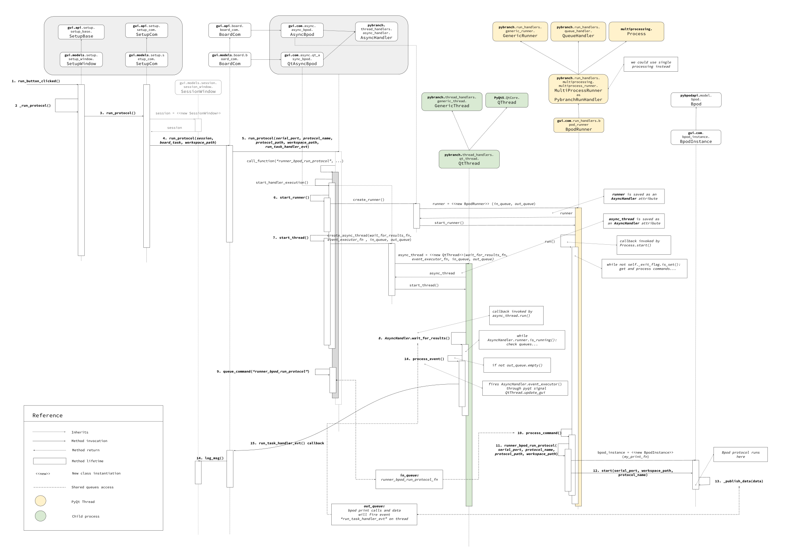

Bpod interaction¶
- On this page you will learn:
- How multiprocessing works
- How GUI handles protocols and communicates with Bpod
- How messages from bpod since “_publish_data” go to the multiprocessing queue until they are parsed on the factory
Multiprocessing¶
PyBpod GUI allows to control several Bpod boxes from a single application. To achieve parallel execution, we use Qt Threads to avoid interface from freezing and Python3 multiprocessing for getting the most out of computer CPU parallelization capabilities.
For each setup you run a protocol, a new Qt Thread and a process child will be created and get allocated to a single Bpod connection. This ensures the maximum performance. Moreover, if a Bpod box fails, the other Bpod boxes are not affected.

Starting protocol on Bpod¶
From the moment you press the button “run” on the GUI until output shows up in the console and it is saved on session history file, a lot of stuff is going on. First, let’s see how the GUI handles the “run” button. SetupWindow class is responsible for painting the setup window, including input fields and buttons.
class SetupWindow(Setup, BaseWidget):
"""
Define here which fields from the setup model should appear on the details section.
The model fields shall be defined as UI components like text fields, buttons, combo boxes, etc.
You may also assign actions to these components.
(...)
"""
def __init__(self, experiment=None):
BaseWidget.__init__(self, 'Experiment')
self._name = ControlText('Subject name')
self._board = ControlCombo('Box')
self._run_task_btn = ControlButton('Run')
Setup.__init__(self, experiment)
self.reload_boards()
self._formset = [
'_name',
'_board',
(' ', ' ', '_run_protocol_btn'),
' '
]
(...)
self._run_protocol_btn.value = self._run_protocol
def _run_protocol(self):
"""
Defines behavior of the button :attr:`SetupWindow._run_task_btn`.
This methods is called every time the user presses the run button.
"""
try:
if self.status == SetupWindow.STATUS_RUNNING_PROTOCOL_HANDLER:
self.stop_protocol()
elif self.status == SetupWindow.STATUS_READY:
self.run_protocol()
except RunSetupError as err:
QMessageBox.warning(self, "Warning", str(err))
except Exception as err:
QMessageBox.critical(self, "Unexpected Error", str(err))
The “run” button click event will fire a complex sequence of calls. Detail explanation of this process is out of scope of this tutorial. However, the following diagram resumes this process. What is important to retain is that the pybpod GUI library makes us of the Pybranch library to handle Qt Threads and python multiprocessing. Notice how inheritance is used for several classes to promote code reusability and separating concepts.
{kind=link}